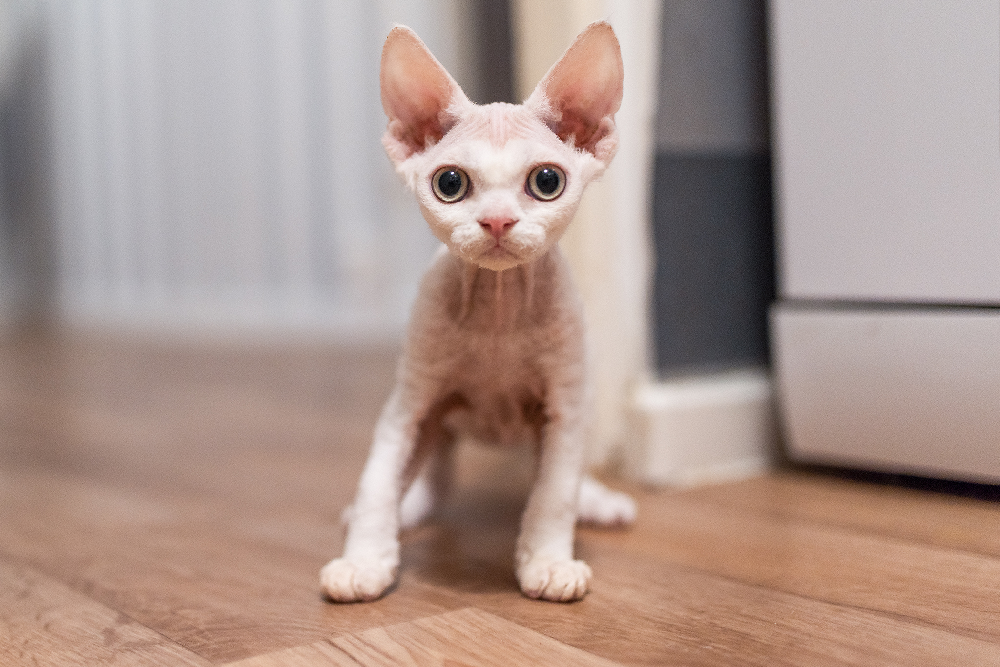

Devon rex to rasa, która poprzez swoją prezencję zyskuje wielu zwolenników, jak i przeciwników.
Ogromne, przenikliwe oczy, duże uszy, a przy tym drobny pyszczek, składają się na interesujący obraz
przedstawicieli gatunku. Wątpliwości związane z urodą tych kotów zostają szybko rozwiane po
nawiązaniu relacji z nimi. To zwierzęta niesamowicie przyjacielskie oraz nagminnie naruszające
przestrzeń osobistą. Stale szukają kontaktu, czy to z człowiekiem, czy też z innym kotem. Są pełne
miłości i bardzo energiczne. To towarzysze, którym trzeba poświęcać czas, niemniej jednak
rekompensują to poprzez przywiązanie, oddanie i miłość. W naszej hodowli znajdują się 2 kotki, matka
z córką. Mają bardzo łagodne usposobienie i są nierozłączne. Devony uwielbiają ciepło więc są
częstymi gośćmi w naszej pościeli.